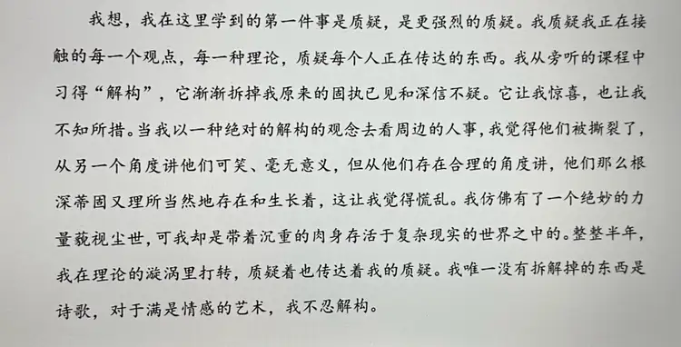

保留原话与语气，修正错字与分段。英文为网站译文。文中的判断与疑问保留写作当时的状态。Original voice retained, with light typo and paragraph corrections. The English is a website translation; judgements and questions reflect the time of writing.
我想，我在这里学到的第一件事是质疑，是更强烈的质疑。我质疑我正在接触的每一个观点，每一种理论、质疑每个人正在传达的东西。我从旁听的课程中习得“解构”，它渐渐拆掉我原来的固执己见和深信不疑。它让我惊喜，也让我不知所措。I think the first thing I learned here was to question—to question more intensely. I question every view and theory I encounter, and what everyone is trying to convey. From the classes I sat in on, I learned “deconstruction.” It gradually dismantles my old convictions and certainties. It surprises me, and leaves me at a loss.
当我以一种绝对的解构的观念去看周边的人事，我觉得他们被撕裂了，从另一个角度讲他们可笑、毫无意义，但从他们存在合理的角度讲，他们那么根深蒂固又理所当然地存在和生长着，这让我觉得慌乱。When I look at the people and things around me through an absolute idea of deconstruction, I feel they have been torn apart. From one angle they seem absurd, meaningless; from the angle that grants their existence its reasons, they are so deeply rooted, existing and growing as a matter of course. That unsettles me.
我仿佛有了一个绝妙的力量藐视尘世，可我却是带着沉重的肉身存活于复杂现实的世界之中的。整整半年，我在理论的漩涡里打转，质疑着也传达着我的质疑。It is as if I have acquired a marvellous power to look down upon the world, yet I live in that complex, real world with a heavy physical body. For half a year I have been circling in a whirlpool of theory, questioning and communicating my questions.
我唯一没有拆解掉的东西是诗歌，对于满是情感的艺术，我不忍解构。The one thing I have not taken apart is poetry. When art is full of feeling, I cannot bring myself to deconstruct it.
查看完整中文原稿View the complete Chinese manuscript ↗
